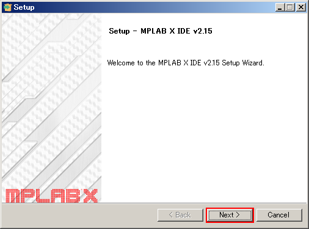
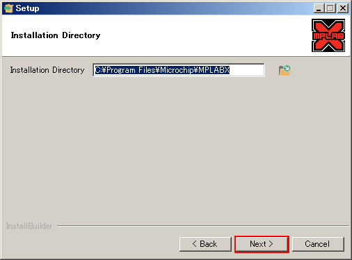
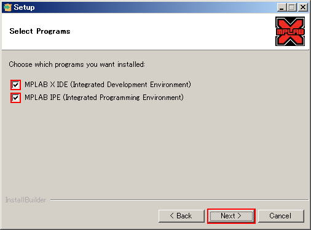
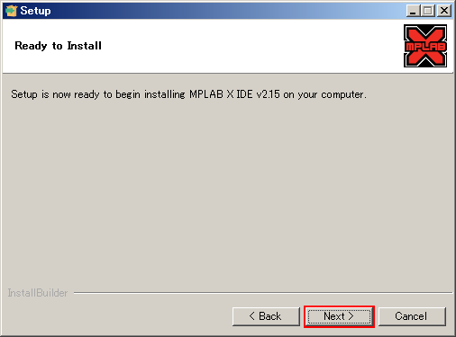
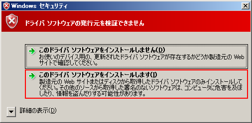
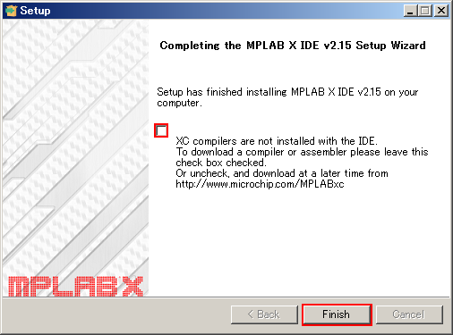

MPLAB X IDEのインストール方法
はじめに
ここでは，Microchip Technologyが自社のPICマイコン開発向けに提供している統合開発環境（IDE），MPLAB X IDEのインストール方法を説明します． MPLAB X IDEは，Microchip Technologyの旧統合開発環境であるMPLAB IDEの後継にあたるソフトウェアで，MPLAB IDEには実装されていなかったさまざまな新機能が追加されている模様です． 詳しくは，Microchip TechnologyのMPLAB X IDEのWebページをご覧ください．
以降で掲載するスクリーンショットは，下記の環境でインストールした際のものです．
| OS | Microsoft Windows Server 2008 Standard x86 Service Pack 2 |
|---|---|
| MPLAB X IDE | MPLAB X IDE v2.15 |
ソフトウェアのダウンロード
Microchip TechnologyのMPLAB X IDEのWebページにアクセスし， ページ左側のリンクから，Windows用のMPLAB X IDEをダウンロードします．
ソフトウェアのインストール
ダウンロードした圧縮ファイル「MPLABX-v2.15-windows-installer.zip」を展開し，インストーラ「MPLABX-v2.15-windows-installer.exe」を管理者権限で実行します．
「Next」をクリックします．
{kind=link}
「I accept the agreement」にチェックを入れて，「Next」をクリックします．

インストールフォルダを指定します．通常は既定のままで良いので，「Next」をクリックします．
{kind=link}
インストールプログラムを指定します．通常は既定のままで良いので，「Next」をクリックします．
{kind=link}
インストール準備が整いました．「Next」をクリックします．
{kind=link}
「ドライバ ソフトウェアの発行元を検証できません」などのWindows セキュリティのウィンドウが表示された場合は，「このドライバ ソフトウェアをインストールします」をクリックします．
{kind=link}
インストール完了を知らせるウィンドウです． 「XC compilers are not installed with the IDE」のチェックを外した後，「Finish」をクリックしてインストーラを終了します． 引き続きXC Compilerをインストールする場合でも，チェックを外して問題ありません．
{kind=link}
以上で，MPLAB X IDEのインストールが完了しました． 引き続いてXC Compilerのインストールを行う場合は，「MPLAB XC8 C Compilerのインストール方法」をご覧ください．